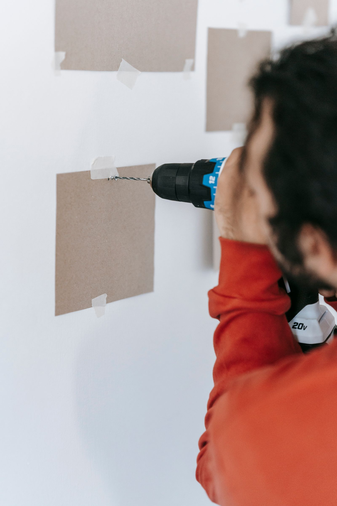

Magyar és angol egyeztetés tulajdonosokkal, kezelőkkel, vendéglátókkal és helyszíni kapcsolattartókkal. Hungarian and English coordination with owners, managers, hosts and local contacts.
Handyman szolgáltatás Budapesten
Handyman services in Budapest
Kisebb javítások és praktikus szerelési munkák budapesti ingatlanokhoz. Reliable handyman services in Budapest for practical property repairs.
Szervezett segítség lakásokhoz, Airbnb-ingatlanokhoz, irodákhoz és külföldön élő tulajdonosoknak. Polcok, karnisok, kisebb rögzítések, bútorösszeszerelés, ajtó- és zárkörnyéki javítások, falhibák és átadás előtti praktikus karbantartás, magyar és angol egyeztetéssel. Organised support for apartments, Airbnb properties, offices and owners living abroad. Shelves, curtain rails, small fittings, furniture assembly, door and lock-area fixes, wall marks and practical pre-handover maintenance, coordinated in Hungarian and English.

Miért hasznos?
Why it helps
Fotók, rövid feladatlista, tiszta következő lépés.
Photos, a short task list and a clear next step.
Kérés szerint fotók segítik a hiba, a feladat és az elkészült állapot távoli követését. Photo updates can help you follow the issue, the task and the finished condition remotely.
Budapesti lakások, irodák, rövid távú kiadások és saját otthonok hétköznapi javításaira szabva. Adapted to everyday repair needs in Budapest apartments, offices, short-term rentals and private homes.
Az oldalon szereplő képek illusztrációk, amelyek tipikus munkafolyamatokat és várható eredményeket mutatnak. The images on this website are illustrative examples showing typical work processes and expected results.
01
Milyen handyman feladatokban segítünk? What handyman tasks can we help with?
A kisebb javítások akkor működnek jól, ha a feladatok pontosan láthatók, a hozzáférés rendezett, és a munkát nem kell több körben újraszervezni. A legtöbb teendő néhány fotóval és rövid leírással előkészíthető. Small repairs work best when the tasks are visible, access is clear and the visit does not need to be reorganised several times. Most items can be prepared with a few photos and a short description.
Kisebb lakásjavításokSmall apartment repairs
Kilazult elemek, apró sérülések, falnyomok, szegélyek, rögzítések és átadás előtt zavaró, de jól kezelhető hibák rendezése.Loose items, small defects, wall marks, trims, fittings and visible but manageable issues before handover or guest arrival.
Bútorösszeszerelés és beállításFurniture assembly and adjustment
Lapraszerelt bútorok, kisebb szekrények, ágyak, asztalok és praktikus lakberendezési elemek összeszerelése vagy igazítása.Assembly or adjustment of flat-pack furniture, smaller cabinets, beds, tables and practical interior elements.
Polcok, karnisok és rögzítésekShelves, curtain rails and fittings
Polcok, képek, karnisok, kisebb konzolok és tartók felszerelése, a fal típusa és a használat alapján egyeztetve.Installing shelves, pictures, curtain rails, brackets and small supports, discussed around wall type and intended use.
Ajtók, kilincsek és kisebb vasalatokDoors, handles and minor hardware
Kilincs, zárkörnyéki apró hiba, ajtóigazítás, pánt, csavar vagy kisebb vasalat kezelése, ha a feladat nem igényel szakági cserét.Handles, minor lock-area issues, door adjustment, hinges, screws or small hardware fixes when the task does not require specialist replacement.
Faljavítás és javítófestésWall repairs and touch-ups
Tiplik, furatok, kisebb leverődések, vendég vagy bérlő utáni nyomok és javítófestés előkészítése bérbeadás, fotózás vagy beköltözés előtt.Wall plugs, small holes, chips, post-guest or post-tenant marks and touch-up preparation before rental, photos or move-in.
Airbnb és távoli tulajdonosi támogatásAirbnb and remote-owner support
Gyorsan listázható, fotókkal követhető javítások vendégváltás, bérlőváltás, irodai látogatás vagy tulajdonosi távollét esetén.Clearly listed, photo-documented repairs for guest turnover, tenant move-out, office visits or owners who are not in Budapest.
02
Tipikus helyzetek, amikor egy megbízható handyman sok időt spórol. Typical situations where a reliable handyman saves time.
A handyman szolgáltatás nem nagy felújításról szól, hanem azokról a praktikus hibákról, amelyek miatt egy lakás kevésbé rendezett, egy Airbnb kevésbé vendégkész, vagy egy iroda kevésbé professzionális. Handyman work is not about major renovation. It is about practical issues that make an apartment feel unfinished, an Airbnb less guest-ready or an office less professional.
- Külföldi tulajdonosokForeign ownersTávoli egyeztetés, fotók, hozzáférés és rövid feladatlista, hogy a tulajdonosnak ne kelljen Budapestre utaznia egy apró javítás miatt.Remote coordination, photos, access and a short task list so the owner does not need to travel to Budapest for a small repair.
- Airbnb-házigazdákAirbnb hostsVendégváltás után előkerülő rögzítések, falnyomok, kilincsek, kisebb hibák és bemutatás előtti frissítések.Loose fittings, wall marks, handles, small defects and presentation touch-ups discovered after guest stays.
- Irodák és ingatlankezelőkOffices and property managersRendezett, követhető segítség kisebb javításokhoz, amikor a helyszíni működés és az időzítés is fontos.Organised, trackable support for smaller repairs when on-site operation and timing both matter.
- Budapesti lakók és tulajdonosokBudapest residents and ownersBeköltözés, eladás, bérbeadás vagy szezonális rendbetétel előtt gyakran a kis javítások adják a legnagyobb látható különbséget.Before moving in, selling, renting or seasonal tidying, small repairs often make the biggest visible difference.


A képek illusztratív példák: tipikus handyman helyzeteket mutatnak, nem konkrét elkészült munkákat vagy ügyfélreferenciákat.
These are illustrative examples of typical handyman situations; they are not presented as completed client projects or references.
03
Hogyan működik a folyamat?How the process works
A kisebb javításoknál a legfontosabb, hogy már az elején világos legyen: mi a hiba, hol van, hogyan lehet hozzáférni, és mi a kívánt eredmény.For small repairs, the most important part is clarity from the start: what the issue is, where it is, how access works and what result is expected.
Fotók és rövid leírásPhotos and short brief
Küldjön néhány fotót, címet vagy kerületet, időzítést és hozzáférési információt. Ez segít eldönteni, mi készíthető elő előre.Send a few photos, address or district, timing and access details. This helps clarify what can be prepared in advance.
Feladatlista és realitásTask list and feasibility
Tisztázzuk, mely tételek kezelhetők handyman feladatként, és hol lehet szükség más szakágra vagy külön egyeztetésre.We clarify which items fit handyman work and where another specialist or separate discussion may be needed.
Szervezett helyszíni munkaOrganised on-site visit
A munka a jóváhagyott feladatlista alapján halad. Ha új tétel derül ki, azt külön jelezzük a munkatartalom módosítása előtt.The visit follows the approved task list. If a new item appears, it is discussed before the scope changes.
Fotós visszajelzésPhoto update
Kérés szerint fotóval visszajelezzük a fontos részleteket, így távolról is látható, mi történt a helyszínen.On request, key details can be documented with photos so you can see what happened on site remotely.
04
Miért a Budapest Property Services?Why choose Budapest Property Services?
A kisebb javítások értéke sokszor nem a munkaméretben, hanem a gyors, tiszta egyeztetésben és a rendezett kivitelezésben van.The value of small repairs is often not the size of the task, but clear coordination and organised execution.
Átlátható egyeztetésClear coordination
A feladatokat magyarul vagy angolul, röviden és érthetően lehet átbeszélni. Ez különösen hasznos, ha több szereplő érintett.Tasks can be discussed clearly in Hungarian or English. This is especially useful when several people are involved.
Praktikus problémamegoldásPractical problem solving
A cél nem túlbonyolítani a kisebb hibákat, hanem reális, használható megoldást adni a helyszín és az időzítés alapján.The goal is not to overcomplicate small issues, but to find realistic, useful solutions based on location and timing.
Budapesti fókuszBudapest focus
A szolgáltatás budapesti lakások, irodák, Airbnb-ingatlanok és magánotthonok hétköznapi javítási igényeihez igazodik.The service is adapted to everyday repair needs in Budapest apartments, offices, Airbnb properties and private homes.
05
Gyakori kérdések a handyman szolgáltatásrólHandyman services FAQ
Gyakorlati válaszok tulajdonosoknak, Airbnb-házigazdáknak, irodáknak és lakóknak.Practical answers for owners, Airbnb hosts, offices and residents.
Milyen kisebb javításokat vállalnak?What small repairs do you handle?
Tipikus feladat lehet polc, karnis, kisebb rögzítés, bútorösszeszerelés, kilincs, ajtóigazítás, falnyom vagy apró szerelési hiba. A pontos vállalhatóság mindig a fotók, a helyszín és a hozzáférés alapján tisztázható.Typical tasks include shelves, curtain rails, small fittings, furniture assembly, handles, door adjustment, wall marks and minor practical defects. Feasibility is clarified from photos, location and access.
Dolgoznak külföldön élő tulajdonosokkal?Do you work with owners living abroad?
Igen. Ha a bejutás megoldott és a feladat fotókkal jól bemutatható, sok kisebb javítás távolról is előkészíthető. Kérés szerint fotós visszajelzést is küldünk a fontos részletekről.Yes. If access is arranged and the task can be shown clearly with photos, many small repairs can be prepared remotely. Photo updates can be sent for key details on request.
Segítenek Airbnb vendégváltás után?Can you help after Airbnb guest turnover?
Igen, gyakoriak a vendégváltás után látható apró hibák: kilazult rögzítések, falnyomok, sérült kiegészítők vagy gyors beállítások. Rövid határidőnél a kapacitást és a feladat méretét külön egyeztetjük.Yes. After guest turnover, common issues include loose fittings, wall marks, damaged accessories or quick adjustments. Short deadlines are confirmed based on capacity and task size.
Vállalnak bútorösszeszerelést?Do you assemble furniture?
Igen, kisebb lapraszerelt bútorok és praktikus lakberendezési elemek összeszerelésében lehet egyeztetni. Nagyobb, egyedi vagy több szakágat érintő munkáknál előzetes pontosítás szükséges.Yes, smaller flat-pack furniture and practical interior items can be discussed. Larger, custom or multi-trade work needs clarification in advance.
Fel tudnak szerelni polcot vagy karnist?Can you install shelves or curtain rails?
Igen, ha a fal típusa, a kívánt hely és a rögzítendő elem ismert. Érdemes fotót küldeni a falról, a termékről és a használati célról, mert ezek alapján dönthető el, mire kell készülni.Yes, if the wall type, intended position and item to be fixed are clear. Photos of the wall, product and intended use help clarify what preparation is needed.
Vállalnak zárjavítást vagy villanyszerelést?Do you handle lock repair or electrical work?
Kisebb kilincs, pánt, csavar vagy zárkörnyéki praktikus hiba egyeztethető. Zárcsere, biztonsági zár, elektromos hiba vagy szakági engedélyhez kötött munka esetén külön szakemberre lehet szükség.Minor handle, hinge, screw or lock-area issues can be discussed. Lock replacement, security locks, electrical faults or regulated specialist work may require a dedicated professional.
Hogyan kérjek ajánlatot?How do I request a quote?
Küldjön WhatsAppon néhány fotót, rövid leírást, címet vagy kerületet, valamint azt, mikor lenne ideális a munka. Ha több apró feladat van, érdemes listába rendezni őket.Send a few photos on WhatsApp with a short description, address or district and preferred timing. If there are several small items, it helps to list them clearly.
Lehet angolul egyeztetni?Is English communication available?
Igen. A feladatok, fotók, hozzáférés és következő lépések magyarul vagy angolul is egyeztethetők. Ez különösen hasznos külföldi tulajdonosoknál és nemzetközi irodáknál.Yes. Tasks, photos, access and next steps can be coordinated in Hungarian or English. This is especially useful for foreign owners and international offices.
Küldenek fotókat az elkészült munkáról?Do you send photos after the work?
Kérés szerint igen. A fotós visszajelzés különösen akkor praktikus, ha a tulajdonos, kezelő vagy kapcsolattartó nincs a helyszínen a munka idején.Yes, on request. Photo updates are especially practical when the owner, manager or contact person is not on site during the work.
Mikor érdemes handyman helyett nagyobb karbantartást kérni?When should I request broader maintenance instead of handyman work?
Ha több helyiséget érintő festés, nagyobb faljavítás, rendszeres ellenőrzés, kertgondozás vagy összetett átadás előtti munka szükséges, az ingatlankarbantartási szolgáltatás lehet praktikusabb. Ilyenkor a feladatokat egy szélesebb listába érdemes rendezni.If the job includes multi-room painting, larger wall repair, regular checks, garden care or a broader pre-handover scope, the property maintenance service may be more practical. In that case, the tasks are best organised into a wider list.
Következő lépésNext step
Küldjön néhány fotót, és nézzük meg, mi oldható meg praktikus handyman feladatként.Send a few photos and let’s see what can be handled as a practical handyman task.
Egy rövid üzenet is elég: fotók, helyszín vagy kerület, a szükséges időzítés, hozzáférés és a javítás célja. Válaszban segítünk tisztázni a következő ésszerű lépést.A short message is enough: photos, location or district, timing, access and the goal of the repair. In reply, we help clarify the next sensible step.
2-3 fotó2-3 photos
Budapesti cím vagy kerületBudapest address or district
FeladatlistaTask list
HozzáférésAccess
+36 20 667 1832
Fotók küldése WhatsApponSend photos on WhatsApp
Telefonszám másolása
Ingatlankarbantartási oldalProperty maintenance page
Kapcsolat a főoldalonHomepage contact section
Elsődleges terület: Budapest és közvetlen környéke. Magyar és angol egyeztetés.Primary service area: Budapest and nearby locations. Hungarian and English communication.